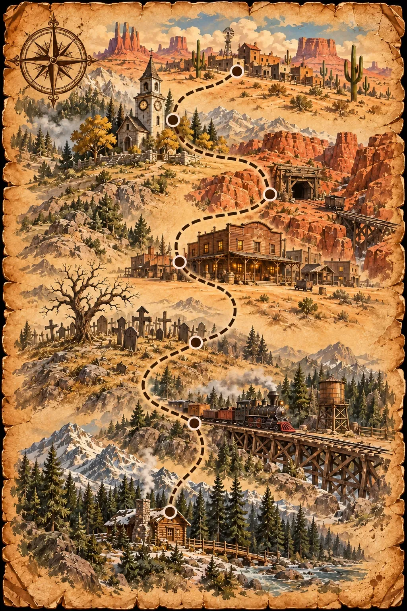

Bullets &
Funerals
Wer zieht schneller?
Du bist:
Du spielst:
Best-of-Three! Warte, bis der Hund bellt und ZIEH! erscheint, dann tippe so schnell du kannst. Wer zu früh zieht, verliert die Runde und die Katze miaut.
GESUCHT
tot oder leblos
GESUCHT
tot oder leblos

2 Spieler
Legt das Handy flach zwischen euch.
Wer unten sitzt, tippt auf die untere Hälfte, wer oben sitzt, auf die obere.
Unten:
Oben:
Wer zuerst zwei Runden gewinnt, bleibt stehen.
Kontostand